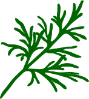

CORIANDER

COurse RegIstry stAtistics aNd aDditional matERial
Explore how keywords co-occur with each other in the chord diagram. Select keywords and click on 'Redraw with Selection' for customisation. The slider sets the number of most frequent connections to display. A fading arc end indicates the connection is not in the counterpart's top x. Click on Courses to explore those. To know more go to GitHub for the full README.